Misi hari ini
Rani mengetik tugas 2 jam, lalu listrik padam. Tugasnya hilang, tapi foto di HP-nya aman. Kenapa bisa begitu? Temukan jawabannya sambil menyelesaikan 6 bagian ini.
1Komputer = Dapur Restoran
Di restoran: pelanggan memesan, koki memasak, bahan disimpan di gudang, hidangan diantar. Komputer bekerja mirip:
| Restoran | Komputer | Contoh |
|---|---|---|
| Pelanggan memesan | Input | keyboard, mouse, scanner, mikrofon |
| Koki | Proses (CPU) | processor di motherboard |
| Meja kerja koki | RAM | tempat data yang sedang dipakai |
| Gudang bahan | Storage | SSD, HDD, flashdisk |
| Hidangan | Output | monitor, printer, speaker, proyektor |
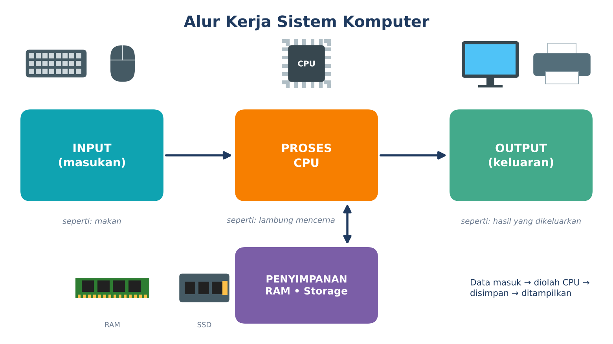
2Semua Data = 0 dan 1
Komputer hanya mengenal dua keadaan: ada arus (1) atau tidak (0). Satu angka disebut bit, dan 8 bit = 1 byte. Foto, lagu, video, sampai game semuanya adalah deretan 0 dan 1.
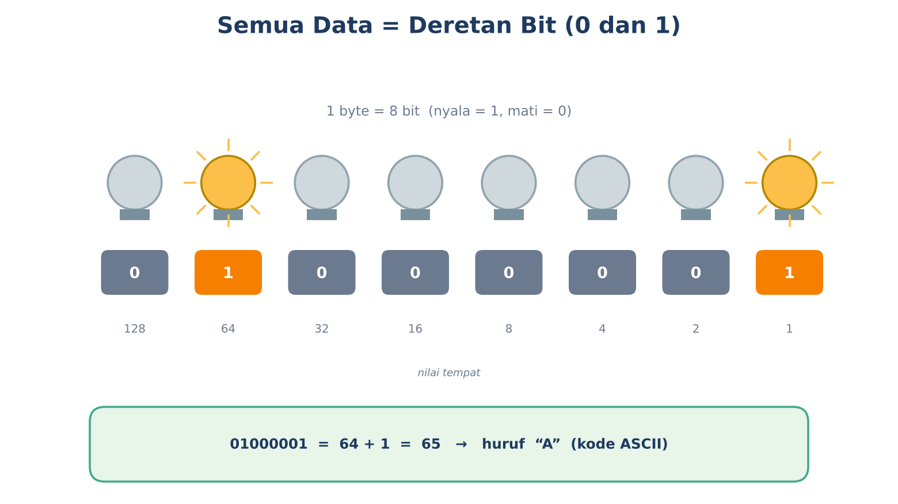
Mainkan: Lampu Bit
Klik tombol bit untuk menyalakan/mematikan. Lihat nilai desimalnya!
3RAM vs Storage
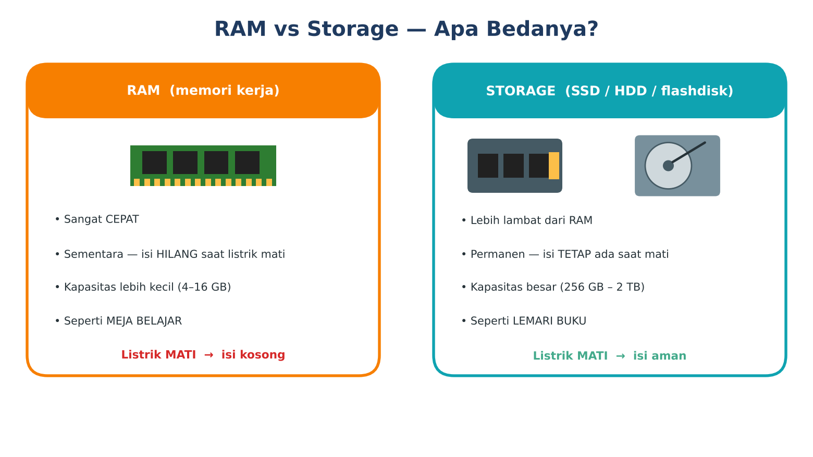
| RAM | Storage | |
|---|---|---|
| Tugas | Tempat kerja sementara | Simpan file selamanya |
| Listrik mati | Hilang | Tetap ada |
| Kecepatan | Sangat cepat | Lebih lambat |
| Kapasitas | 4–16 GB | 256 GB–2 TB |
Simulasi: Mengetik tanpa Save
kosong
kosong
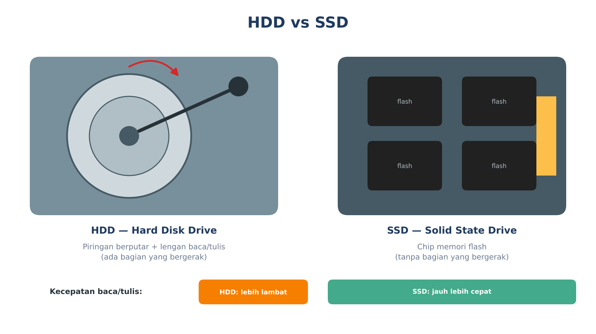
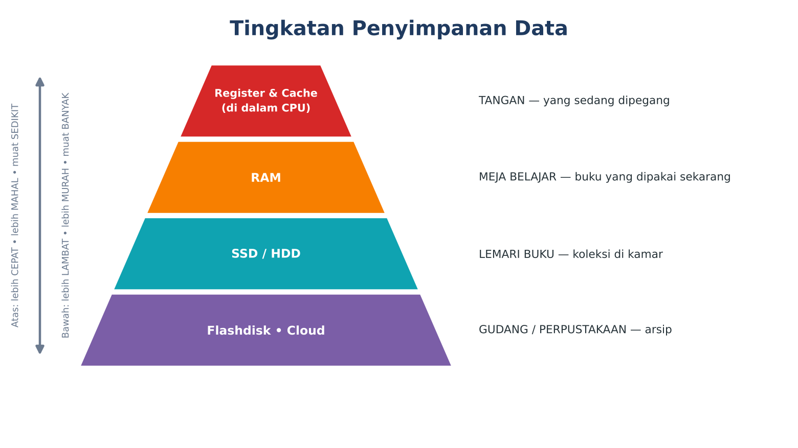
Urutan saat membuka, mengedit, dan menyimpan file
- Buka file: disalin dari storage ke RAM.
- CPU mengolah isi RAM saat kamu mengedit.
- Tekan Save: isi RAM ditulis ke storage.
- Listrik mati: file di storage tetap aman.
4Alamat Memori
Setiap data punya alamat, ditulis dalam bilangan heksadesimal (basis 16): simbol 0–9 lalu A=10, B=11, C=12, D=13, E=14, F=15.
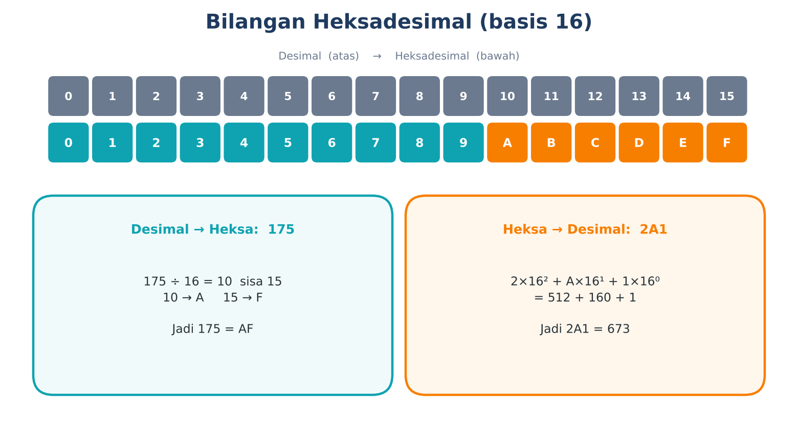
Konverter Desimal ↔ Heksa
Alamat memori ditulis segmen:offset (segmen = baris, offset = kolom). Alamat fisiknya:
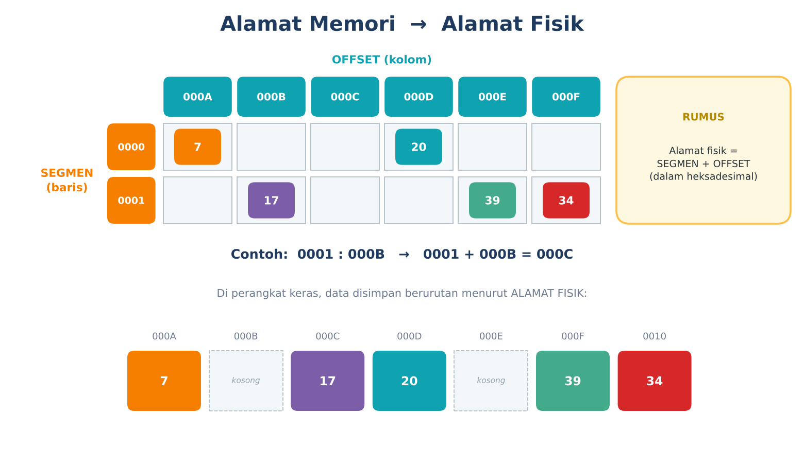
Kalkulator Alamat Fisik
5CPU: Otak Komputer
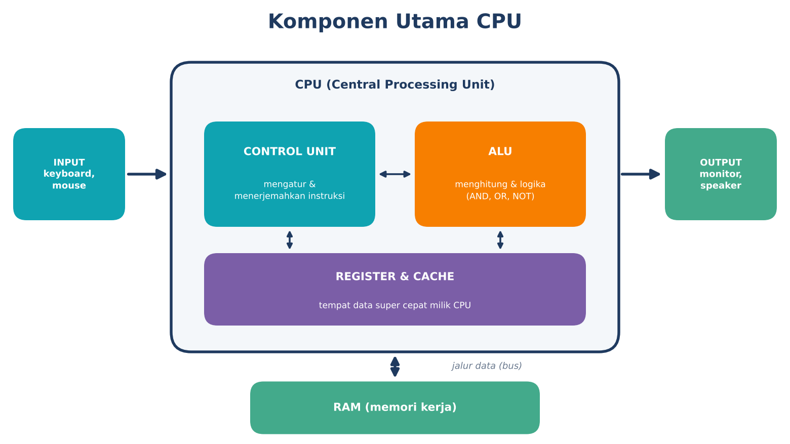
- Control Unit: mengatur dan menerjemahkan instruksi.
- ALU: menghitung dan melakukan operasi logika.
- Register: memori super cepat di dalam CPU.
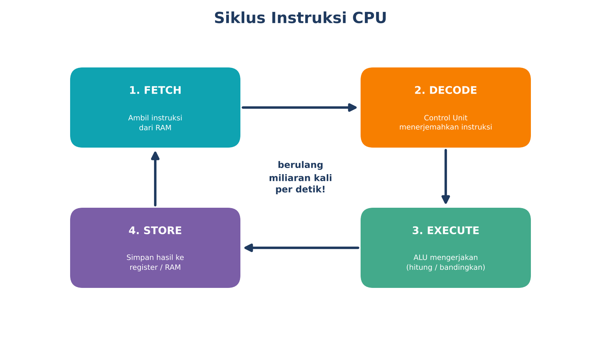
6Gerbang Logika
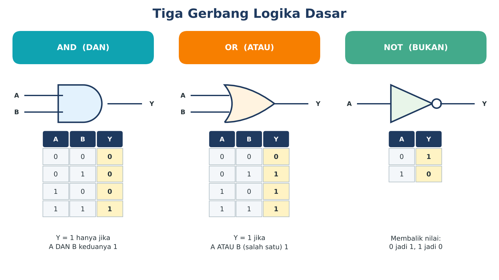
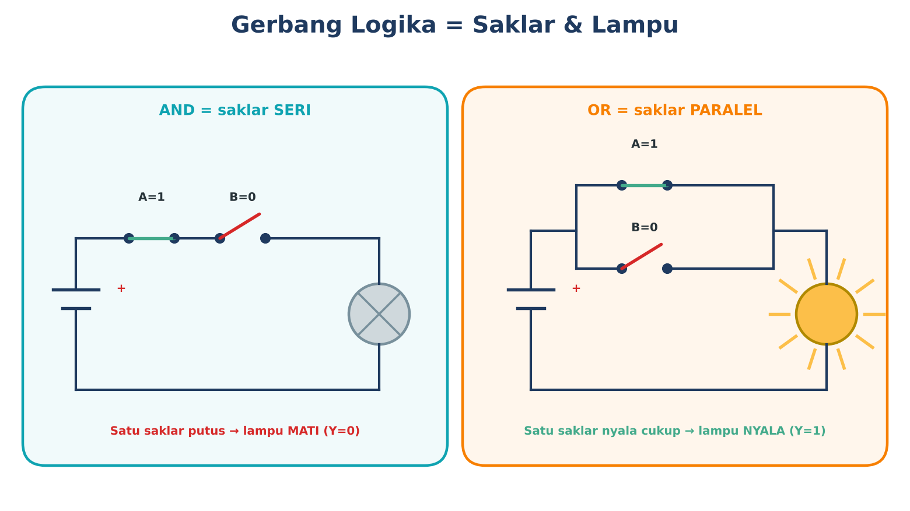
Simulator Gerbang
0
0
1
0
Gerbang bisa menjumlah!
Gabungkan XOR (jumlah) dan AND (simpanan). Coba semua kombinasi A dan B di simulator, lalu baca Y X sebagai bilangan biner.
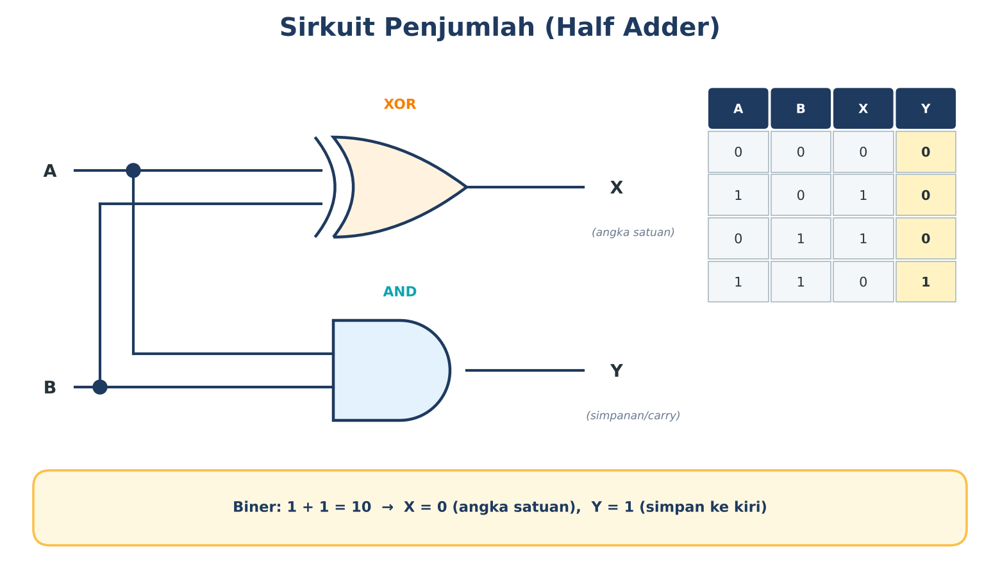
7Kuis Cepat
Rangkuman
- Alur: input → proses (CPU) → penyimpanan → output.
- Data = bit (0/1); 8 bit = 1 byte.
- RAM: sementara & cepat. Storage: permanen & besar.
- Alamat fisik = segmen + offset (heksadesimal).
- CPU = Control Unit + ALU + register.
- Gerbang AND, OR, NOT menyusun sirkuit yang bisa menjumlahkan.